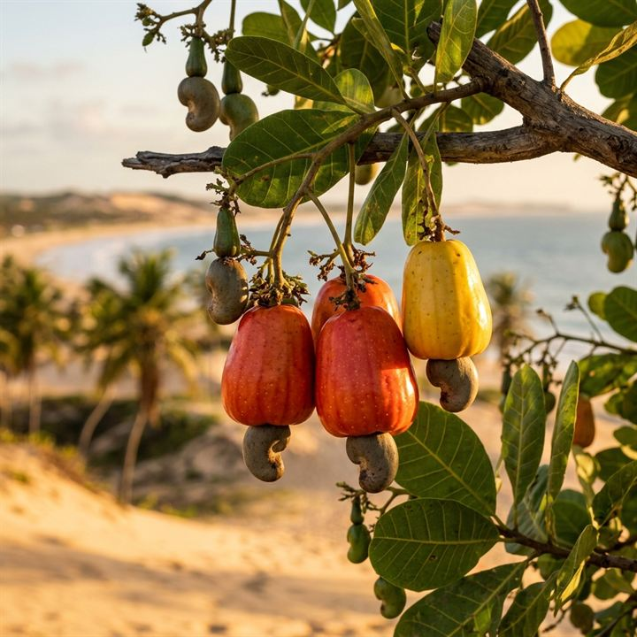

Litoral · Praia
01
Caju
A identidade litorânea
Nascido entre dunas e coqueirais, o caju é o sabor da faixa litorânea de Itapipoca — da Praia da Baleia às barracas à beira-mar. Doce, ácido e generoso, vira suco, doce, cajuína e castanha, carregando a memória de quem vive entre o mar e a terra arenosa.
- Castanha
- Cajuína
- Doces